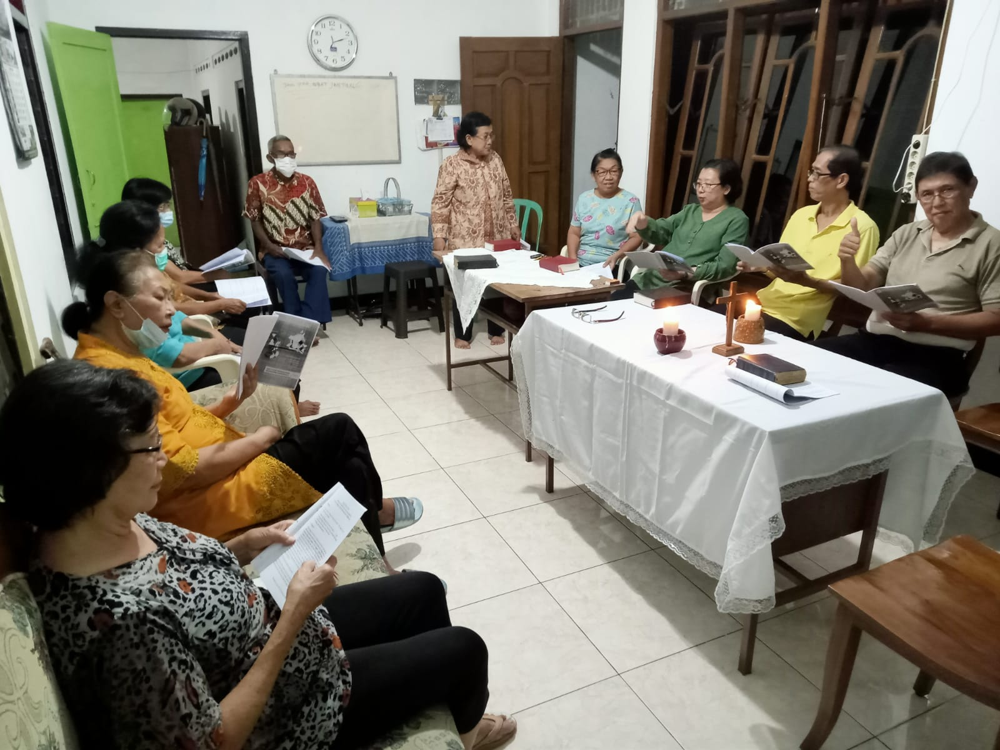

Pendalaman Iman APP ke 3
|  | ||
PERTEMUAN III “BERJALAN BERSAMA DALAM KRISTUS MEWUJUDKAN BUMI RUMAH KITA BERSAMA”
Pengantar
Pada tanggal 24 Mei 2015, di Basilika Santo Petrus, Paus Fransiskus mempromulgasikan ensiklik tentang perawatan bumi sebagai rumah kita bersama dengan judul Laudato Si’, Mi’ Signore – Terpujilah Engkau, ya Tuhanku. Judul ini dikutip dari salah satu Kidung St. Fransiskus Asisi. Rumusan Paus Fransiskus tentang Bumi Rumah Bersama terinspirasi oleh St. Fransiskus dari Asisi. St. Fransiskus dari Asisi melihat bumi “bagaikan saudari yang berbagi hidup dengan kita, dan seperti ibu yang jelita yang menyambut kita dengan tangan terbuka” (LS. 1). Bumi merupakan asal usul dan rumah di mana manusia tinggal, belajar, bermain, dan mengalami pertumbuhan. Bumi telah menyediakan semua kebutuhan hidup manusia itu secara cuma-cuma. Karenanya tanpa bumi manusia akan mati. Tetapi, tanpa manusia bumi tidak akan mati. Hanya dengan berada di bumi manusia dapat menyadari kodrat diri yang sesungguhnya.
Inspirasi Kitab Suci : Kejadian 6: 9, 11-13, 17 - 22
6: 9 Inilah riwayat Nuh: Nuh adalah seorang yang benar dan tidak bercela di antara orang-orang sezamannya; dan Nuh itu hidup bergaul dengan Allah.
6:11 Adapun bumi itu telah rusak di hadapan Allah dan penuh dengan kekerasan.
6:12 Allah menilik bumi itu dan sungguhlah rusak benar, sebab semua manusia menjalankan hidup yang rusak di bumi.
6:13 Berfirmanlah Allah kepada Nuh: “Aku telah memutuskan mengakhiri hidup segala makhluk, sebab bumi telah penuh dengan kekerasan oleh mereka, jadi Aku akan memusnahkan mereka bersama-sama dengan bumi.”
6:17 “Sebab sesungguhnya Aku akan mendatangkan air bah meliputi bumi untuk memusnahkan segala yang hidup dan bernyawa di kolong langit; segala yang ada di bumi akan mati binasa.
6:18 Tetapi dengan engkau Aku akan mengadakan perjanjian-Ku, dan engkau akan masuk ke dalam bahtera itu: engkau bersama-sama dengan anak-anakmu dan isterimu dan isteri anak-anakmu.
6:19 Dan dari segala yang hidup, dari segala makhluk. Dari semuanya haruslah engkau bawa satu pasang ke dalam bahtera itu supaya terpelihara hidupnya bersama-sama dengan engkau; jantan dan betina harus kaubawa.
6:20 Dari segala jenis burung dan dari segala jenis hewan, dari semuanya itu harus datang satu pasang kepadamu, supaya terpelihara hidupnya.
6:21 Dan engkau, bawalah bagimu segala apa yang dapat dimakan; kumpulkanlah itu padamu untuk menjadi makanan bagimu dan bagi mereka.”
6:22 Lalu Nuh melakukan semuanya itu; tepat seperti yang diperintahkan Allah kepadanya, demikianlah dilakukannya.
Pertanyaan Renungan/Sharing:
- Dari bacaan Kej 6 : 9, 11-13. 17 – 22, kata atau kalimat mana yang berkesan dan mengapa berkesan bagi saudara?
- Apa yang menjadi penyebab didatangkannya air bah yang membawa kehancuran bumi pada jaman Nuh?
- Mengapa Allah menyelamatkan Nuh dan keluarganya dari bencana air Bah tersebut? Dan bagaimana Allah menyelamatkan Nuh beserta keuarganya?
- Allah menggunakan Nuh beserta keluarganya utuk menyelamatkan karya ciptaan-Nya. Apa saja yang dilakukan Nuh bersama keluarganya untuk menyelamatkan keutuhan ciptaan?
RENUNGAN / PENEGASAN
Butir-butir permenungan/penegasan:
- Kehendak Allah untuk menyelamatkan tidak hanya untuk manusia tetapi juga untuk seluruh ciptaan. Oleh karena itu, Allah memerintahkan Nuh untuk menyelamatkan karya ciptaan-Nya dengan membawa binatang-binatang karya ciptaan-Nya dalam bahtera yang dibuat Nuh. Dalam Kej 6 : 19 dan Kej 6 : 20 perintah untuk membawa segala yang hidup dari segala makhluk dan segala jenis burung dari segala jenis hewan bertujuan “supaya terpelihara hidupnya”, menjadi perutusan yang jelas bagi Nuh dan keluarganya untuk memelihara segala makhluk hidup dan menjaga keutuhan ciptaan.
- Kisah air Bah yang membinasakan bumi dan segala isinya, adalah upaya pemulihan dan pemurnian yang dilakukan Allah sehingga ciptaan yang pada awalnya baik tetapi rusak oleh ulah manusia sendiri, kini dipulihkan dan dibaharui oleh Allah menjadi ciptaan baru. Akhir dari kisah air Bah ditutup dengan kehadiran pelangi sebagai simbol pemulihan, janji Allah untuk tidak membinasakan bumi dan penciptaan baru dari kerusakan menuju kepada keutuhan kembali. Allah tidak membinasakan melainkan memurnikan dan memperbaharui kembali seluruh ciptaan.
- Riwayat keluarga Nuh dalam Kej 6 menjadi kisah yang kaya makna untuk direfleksikan dan dijadikan acuan sebagai momentum menyadari bahwa Bumi adalah rumah bersama yang seharusnya tidak dirusak oleh kedosaan dan perilaku jahat manusia yang mengakibatkan kerusakan alam ciptaan. Manusia dipanggil untuk menyadari kerusakan lingkungan hidup sebagai kesempatan untuk bertobat, merawat, menjaga dan memelihara alam ciptaan sebagai karya Allah yang luhur dan mulia dan menjadikan kembali Bumi sebagai rumah bersama seluruh ciptaan. Paus Fransiskus juga menegaskan bahwa “Kita bukan Allah. Bumi sudah ada sebelum kita dan telah diberikan kepada kita”. Bumi bukan milik manusia. Tetapi “Tuhanlah yang empunya bumi” (Mzm 24:1), Manusia adalah salah satu ciptaan yang berada dan ditempatkan di tengah-tengah ciptaan lainnya (LS. 2 dan 67).
- Paus Fransiskus menegaskanan bahwa “penyalahgunaan ciptaan dimulai ketika kita tidak lagi melihat apapun kecuali diri kita sendiri” (lih. LS, 6;8). Sama seperti dalam cerita Kitab Suci: Firdaus dan Air Bah, bahwa kejahatan manusia berawal dari ketidaktaatan manusia kepada Allah. Sikap ini adalah ancaman yang paling serius bagi seluruh ciptaan yang telah dirancang dengan baik dan bijaksana oleh sang Pencipta (Mzm. 104: 35.)
- Dalam permenungan ini kita ingin melihat keluarga Nuh yang membangun ketaatan pada kehendak Allah untuk menjadikan kembali Bumi sebagai rumah bersama. Nuh diutus untuk memulihkan kembali bumi dan keutuhan ciptaan ketika Air Bah tejadi. Sebagaimana Allah memanggil Nuh untuk menjadi sarana pemulihan alam ciptaan baru, kita pun dipanggil untuk mengambil bagian dalam karya keselamatan Allah untuk memulihkan, menjaga dan merawat alam. Allah menghendaki agar kita semua menjadi pemelihara dan menjaga alam semesta, agar bumi ini menjadi rumah bersama seluruh karya ciptaan-Nya.
Sharing Pengalaman dan Rencana Aksi
Saudara-saudari terkasih, setelah diterangi Sabda Allah mari kita melihat dan menemukan kembali upaya-upaya yang telah dilakukan keluarga kita, lingkungan/komunitas, paroki kita dalam rangka memulihkan lingkungan dan keutuhan ciptaan :
(bisa disebutkan atau disampaikan video kegiatan Gerakan ekologis yang telah dilakukan di beberapa paroki/lingkungan):
1. Bagaimana upaya keluarga, komunitas/lingkungan dan paroki kita menjaga bumi ini sebagai rumah bersama dengan tetap menjaga keutuhan karya ciptaan Allah dibumi ini ?
2. Gerakan/Aksi/Tindakan apa yang akan dimulai atau dikembangkan oleh keluarga dan komunitas basis dalam masa Prapaskah 2023 untuk menjaga keutuhan ciptaan sebagaimana diamanatkan dalam Visi-Misi Keuskupan kita?
Materi tulisan dari Buku Pendalaman APP 2023 yang disusun oleh Panitia APP Keuskupan Purwokerto